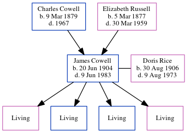

James Henry Norman Cowell 1904 - 1983
[ Home ] | [ Calendar ] | [ Surnames Index ] | [ Census Index ] | [ Family History ]A coach station cleaner and the 2nd of 4 children of Charles Cowell (a newsagent) and Elizabeth Russell, James Cowell, the first cousin once-removed on the mother's side of Nigel Horne, was born in Woodchurch, Thanet, Kent, England on Jun 20, 19041,2,3 and. He married Doris Rice (with whom he had 4 surviving children Eileen D, Desmond James, John N and Hazel Florence) in Westhampnett, Sussex, England on Jun 1, 19265.
During his life, he was living at Streele Cottages, Billingshurst, Sussex on Apr 2, 19116; at Hampworth, Felpham Road, Bognor Regis, West Sussex, England on Sep 29, 19392; and on Brackley House Nursing Home, High Street, Brackley, Northamptonshire, England in 1983.
He died on Jun 9, 1983 in Brackley3,4.
Parents
- Charles Percy was born on Mar 9, 1879
- Elizabeth Ellen was born on Mar 5, 1877
Citations
- 1911 England Census Online publication - Provo, UT, USA: Ancestry.com Operations, Inc., 2011.Original data - Census Returns of England and Wales, 1911. Kew, Surrey, England: The National Archives of the UK (TNA), 1911. Data imaged from the National Archives, London, England.
- 1939 Register - Findmypast (was the head of the household)
- England & Wales deaths 1837-2007 - Findmypast
- England & Wales Government Probate Death Index 1858-2019 - Findmypast
- England & Wales, Marriage Index: 1916-2005 Online publication - Provo, UT, USA: The Generations Network, Inc., 2009.Original data - General Register Office. England and Wales Civil Registration Indexes. London, England: General Register Office. © Crown copyright. Published by permission of the Cont
- 1911 Census for England & Wales - Findmypast (was age 6 and the son of the head of the household)
Media
James Cowell - probate
England & Wales births 1837-2006 - BMD/B/1904/3/AZ/000135/207
England & Wales marriages 1837-2008 - BMD/M/1926/2/AZ/000241/011
England & Wales deaths 1837-2007 Transcription - BMD-D-1983-2-AZ-000200-061
1911 England, Wales & Scotland Census Transcription - GBC-1911-RG14-05302-0043-4
1939 Register Image - TNA-R39-2576-2576A-009
1939 Register Transcription - TNA-R39-2576-2576A-009-38
England & Wales Government Probate Death Index 1858-2019 - GBOR/GOVPROBATE/C/1983-1983/00051818
Family Tree
Generated by ged2site. Last updated on Jun 11, 2024